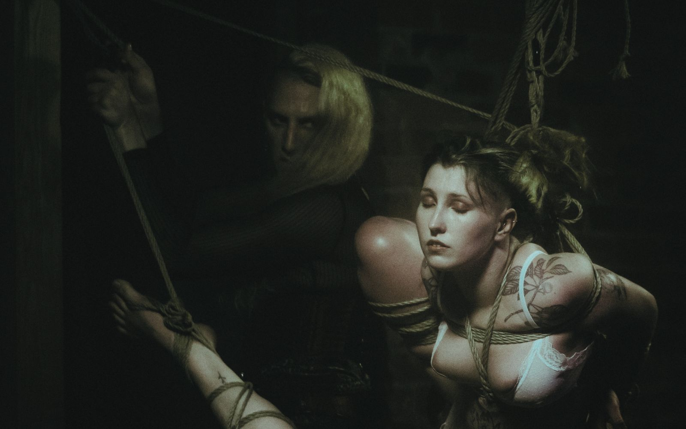
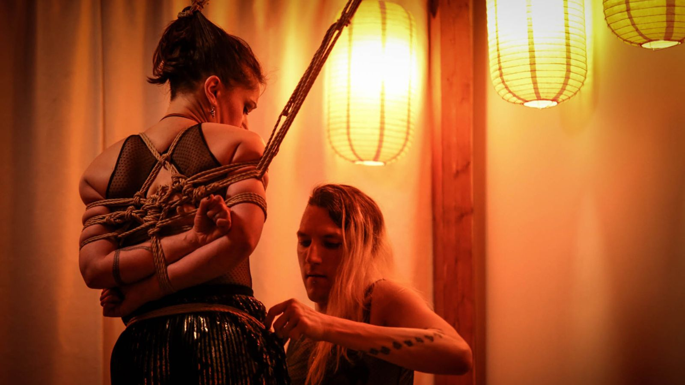
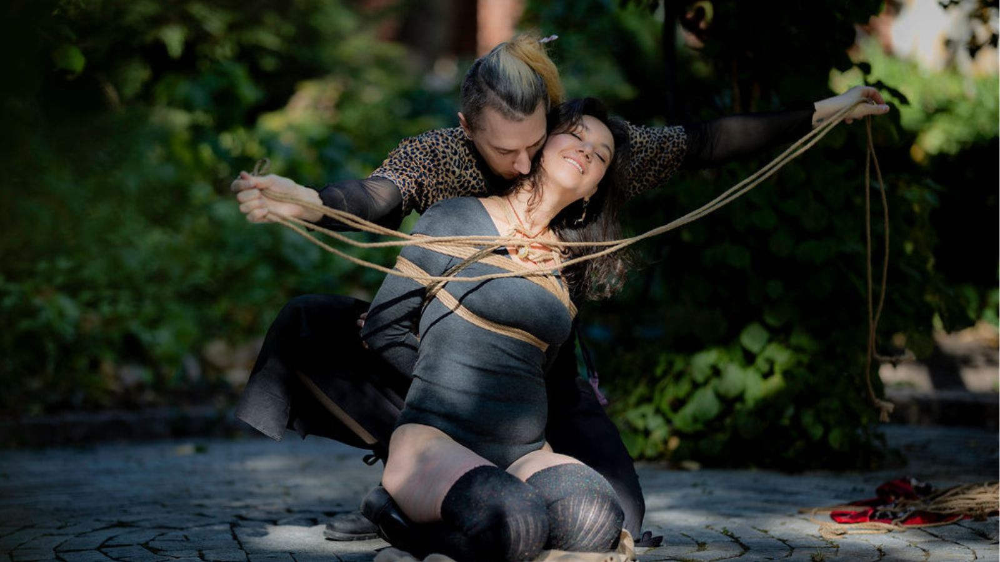
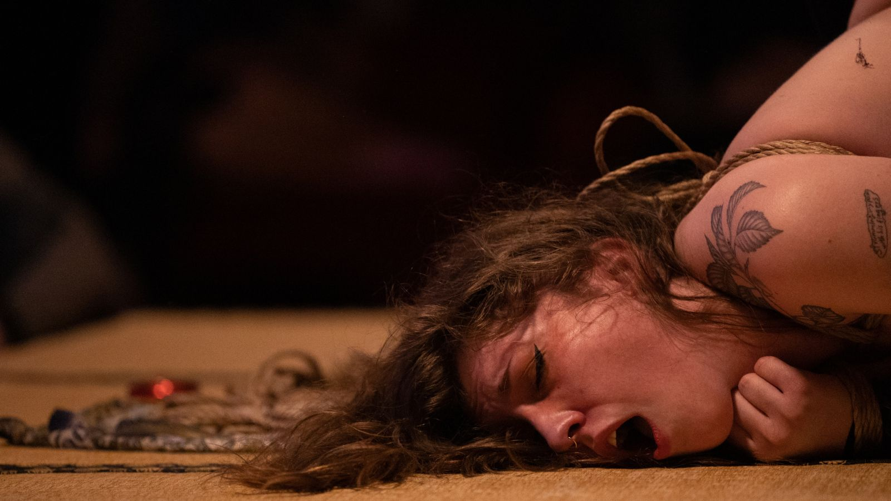

Building frameworks for understanding body, rope, movement, and practice.
Many people come to rope the way I did; pulled in by something they can't quite name yet. A feeling, performance, scene, an image; a conversation that opened a door they didn't know was there.
And then the rope is in your hands, or on you, and it is nothing like you imagined. It is harder. More technical. More intimate. More demanding of your attention than anything warned you it would be.
That gap, between what drew you here and what it actually asks of you; is not a problem to solve. It is the beginning of a practice.
I learned rope in that gap. Found my way through it with some guidance, some luck, and a stubborn decision to do better by others than the learning curve had done by me. That decision became a curriculum. The curriculum became a studio. The studio became a community. And the community keeps becoming, through some stuborness, something none of us fully planned.
You don't have to know where you are going yet. The shape of things really does take time to actually take shape.
Don't give up. Do your best.
I will be there to help you get where you want to go.
These symbols hang above the Kamiza at Tension. A reminder that our actions in rope should be slower, methodical and practiced and that eventually everything will be understood.
Maru Sankaku Shikaku: Circle, Triangle, Square. An ancient teaching from Zen and Japanese martial arts, brought into a contemporary practice. Not as philosophy for its own sake but as a working tool for understanding body, rope, movement, and relationship.
The square holds. It is the container: the form, the frame, the kata repeated until reliable. Without the square, there is nothing to push against and nowhere to return.
The triangle is the moment of decision, where forces meet and something must give. Every transition is a triangle. You choose a direction, apply tension, and there are consequences.
The circle has no beginning and no end. In rope it is the return: to fundamentals, to humility, to practice. Every teacher was once a beginner. The community is circular.
The rope's form, safety prerequisites, the pattern practiced until second nature.
The load decision, emotional charge, choosing to add or release pressure.
Sensitivity to the body receiving rope, adapting when anatomy, breath, or energy shifts.
Curriculum sequence, prerequisites, repeatable components taught consistently.
The challenge placed on a student at the right moment, not too soon, not too late.
Reading the room, following what the student is actually learning.
Agreements, policies, accountability frameworks, boundaries that protect the space.
Honest feedback, consent negotiation, the responsibility of authority.
How a community absorbs conflict, learns, adapts, and continues rather than fractures.
These shapes are not ideas to contemplate but integrate. Structure tells you what the form requires. Tension tells you what the moment demands. Flow tells you how to adapt when reality differs from the plan.
These are not sequential stages. They are simultaneous forces. At any moment in practice, all three are active. The question is: which one needs your attention, right now?
"The rope will tie you as much as you tie it; Mastery is not the goal. Walking the path is."
William Desjardins (she/her, they/them). Fell into rope in 2014 through a Mistress, head first into kink. Started tying in 2015 and never stopped. Founder of Tension MTL, a rope studio built slowly and stubbornly in Montréal. Over 10,000 hours in. Teaching, tying, performing, making mistakes, learning from them.
Former technical training director. That background translated directly: breaking complex things into their smallest learnable components is the same skill, different material. The teaching philosophy has always been about planting seeds and watching students grow.
Teaching approach shaped by component-based martial arts pedagogy. Kenjutsu practiced seriously. Aikido explored more through reading than formal training. Not authorized in any Japanese rope tradition. Everything drawn from many sources, shaped by a decade of deliberate practice and the humility to keep questioning it.
Behind the rigging, behind the classes, behind the policies and the leader label, there is just a person doing their best not to fuck it up. Rope is edge play. Not a caveat. The foundation. The Fundamentals are not a phase to get through. They are the whole practice, revisited at every level.
When philosophy does matter.
Not rules to follow but lenses to see through.
These philosophies shaped me but they are not rules, only companions. They remind us that rope is more than just tying bodies. Mastery is never the goal. Walking the path is.

"The square is not a cage.
It is the container that makes
freedom possible."
"The square is not a cage. It is the container that makes freedom possible."
Structure is not the opposite of freedom. It is the condition of it. The square is the container. The kata. The protocol. Without the square, the circle has nothing to return to and the triangle has nothing to push against.
Anatomy before application. Nerve paths, circulation, joint loading. Structure in the body is prerequisite, not optional.
Clean frictions. Reliable knots. Consistent tension. The forms that can be repeated identically under pressure. Repetition is not boredom. It is preparation.
Policies, agreements, and accountability frameworks. Having the container ready before something goes wrong is the difference between repair and rupture.
Westerners would typically like to skip as many steps as possible. In rope, this leads to dangerous practices. People get hurt, physically and emotionally.
"The path is not something you complete. It is something you continue."
Like martial arts belts, the rope colours at Tension are not trophies. They are reminders of where you stand on your personal Dō, and an invitation to return to roots with each advancement. There is no top. Every colour eventually circles back to Beige.
Fundamentals began as a teacher's aid. But as the writing continued something became clear: the gap was not just technical. It was philosophical. Not just how to tie. How to think about tying.
"I saw over and over that it wasn't when people learned about safety and consent. Sometimes it was if. And that if was unacceptable."
Single column · Futomomo · Batten-Dome · Taiko-Dome · Kannuki · Larkshead · Takedome · Nodome · Gote framework · Hojo Cuffs · Double columns · Wadome · Clove hitch · L-frictions · Rope care · Quick releases
Nerve compression · Circulation · Joint safety · Torsions · Vasovagal syncope · Loss of consciousness · Death · Neck rope · Eyes · Mouth · Hair · Leaving someone unattended · Tools and safety equipment
Consent & negotiation · Opt-in vs opt-out · Fuck Yes framework · Risk profiles · Debriefing · Aftercare · Selfcare · Vetting · Restorative justice · Safer spaces · Planning ahead
What started as a teacher's aid slowly turned into a whole damn book. Technical, anatomical, emotional, and communal. Not just how to tie. How to think about tying.
The parenthetical is not a technicality. It is the most honest thing we can say about what we are trying to build.
Safe(r) spaces require structure. We have a responsibility to hold people more accountable inside safe(r) spaces, not less. Some behaviours will get you benched or removed. Freedom does not mean freedom from consequences.
When you fuck up, own it. Listen. Repair where you can. Step back if you need to. Leadership without accountability is just ego in a shiny outfit.
Aim for Fuck Yes. Sober, informed, enthusiastic, revokable, ongoing. Negotiate honestly. Every time.
Places like Tension do not exist by magic. Show up. Help out. Pay when you can. Contribute to the culture you want to live in.

"Every tie is a choice.
The triangle holds or it hurts.
It should not be forced but felt."
The triangle is the moment of decision. Every tie is a choice. Why are you tying? The answer to that question shapes everything that follows, the technique you choose, the pace you set, the attention you bring.
Rope without intention is just knots. Tension without direction is just force. The triangle holds the question: what are you actually doing here, and does the person in front of you know?
"Every tie is a choice. The triangle holds or it hurts. It should not be forced but felt."
All classes at Tension MTL are taught from both ends of the rope. Technique, body mechanics, consent, and intention woven together.
Private lessons available in person at Tension MTL or remotely. Group workshops at Tension or hosted at your space. Touring workshops available worldwide.
Private parties are intimate and social. Tying in a room of people who want to watch, learn, or simply be in the presence of it. The energy is different from a stage, closer, warmer, more conversational.
Extended time to go deeper, into technique, into practice, into the parts of rope that only emerge when you stop rushing. Montréal is a good city to be in for a few days.
Available for live performance, stage work, and professional production. Film, photo, video, advisory, rigging, and on-set tying.
The rate changes depending on whether a human is in the rope. Many productions opt for mannequins or objects due to liability. Both are available. Travel and prep billed at the advisory rate.

"You return to the beginning
not because you failed;
but because that is what the circle demands."
There is a version of rope that most people see first. Clean lines. Beautiful forms. The aesthetic of it. That version is real and it has its place.
There is another version that brought me in.
I came to rope for the loss of control. Then quickly found a penchant for suffering. I identify as an exhibitionist and a masochist but pain alone doesn't do much for me. Suffering does. The anticipation of it. Being in the hands of someone who knows how to make me suffer, who wants me to suffer for them, and who is getting off on it while doing it in front of a crowd. That. All of that.
That is where I began. As Uke. As the one receiving.
It is from that place that I understand what I now apply.
From semeru: to press forward, to apply pressure, to hold initiative before the blow lands.
In martial arts: the psychological force that precedes technique. The pressure that disrupts your opponent's confidence before you've moved.
In rope: the same principle, different material.
Seme is not pain.
It is the space before pain becomes too much. The threshold. Sustained application of just enough: pressure, sensation, weight, restriction, to produce torment in the specific person you are with, without crossing into what they cannot hold.
That edge is not a line you cross. It is a place you inhabit, deliberately, with complete attention.
In rope this becomes Semenawa, tormenting rope. Not tight for aesthetic reasons. Not suspended for the image of it. Held in sustained torment, physical and psychological, that requires absolute trust in the one applying it.
The difference between Seme and abuse is consent, skill, and the capacity to read another person accurately under pressure. Not occasionally. Continuously. In real time.
For those thirsting for the extremes, the raw energies, the hentai scenes, the places where rope becomes something much older and darker than art, you have your work cut out for you.
It is possible to find those willing and wanting. But the trust between you needs to grow first. And you must be confident enough to effortlessly read someone, to bring them to that edge without letting them fall over it.
That confidence does not come from enthusiasm. It comes from thousands of hours of attention. It comes from having been Uke yourself and knowing what it costs to be held in that place by someone who is paying attention.
The circle is not just about return. It is about what you carry back with you.
Listening with your hands. Responding to micro-movements. Adapting when the body receiving rope shifts, when the plan meets reality, when what was rehearsed gives way to what is actually happening.
Flow is not ease. It is responsiveness. The practitioner who has integrated structure and tension fully enough that they are no longer thinking about them is free to pay attention to what is actually in front of them.
The path moves through, not upward. The tree at Tension continues to grow, each student a branch, each return a deepening of roots.
Every colour eventually circles back to Beige. Every advancement should reflect a revision of our roots. The rope will tie you as much as you tie it.
Touring internationally. Teaching on stages, in studios, in living rooms and dungeons across continents. Collaborating with artists, educators, and communities doing the same work in different contexts.
The work ripples outward, into other communities, other studios, other practices. The circle has no end. What you build, others will build on.
The work continues because people choose to be part of it. Every class taken, every book bought, every workshop hosted keeps the studio running, the curriculum growing, and the teaching sustainable.
If you have learned from this work, in a class, from the book, from a conversation, this is how you give it back. Not as charity. As participation in something worth continuing.
Teaching, performing, consulting, collaborating. In Montréal or wherever the work takes us.
Start with an email. No forms, no intake questionnaires. Just a message about what you are looking to do and we go from there.
The shape of things takes time to actually take shape.
Don't give up. Do your best.